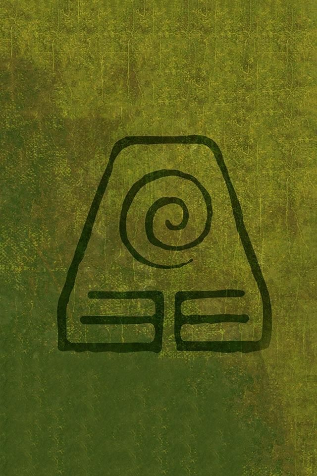
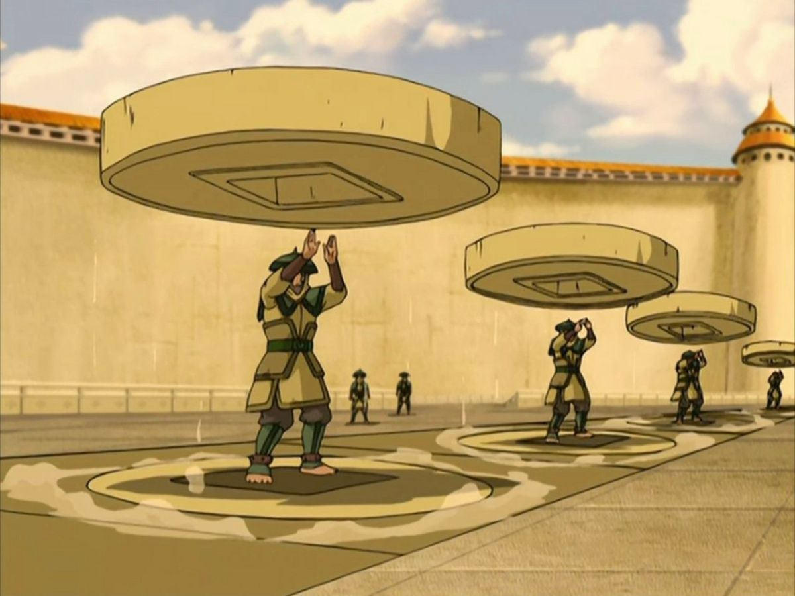
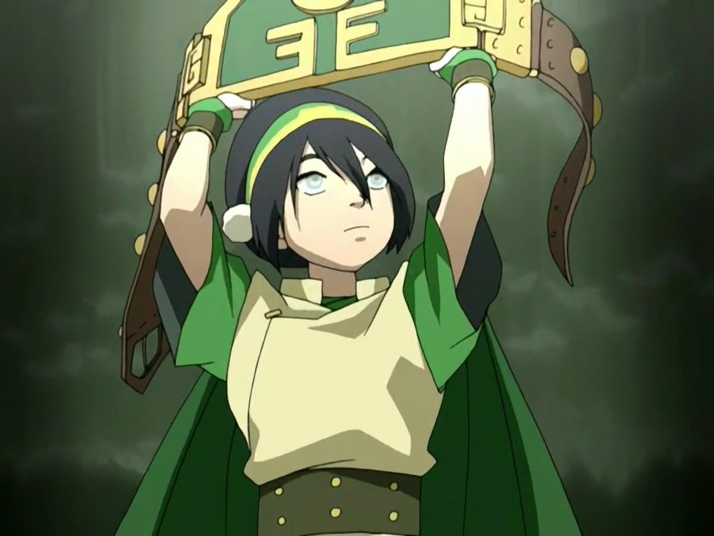
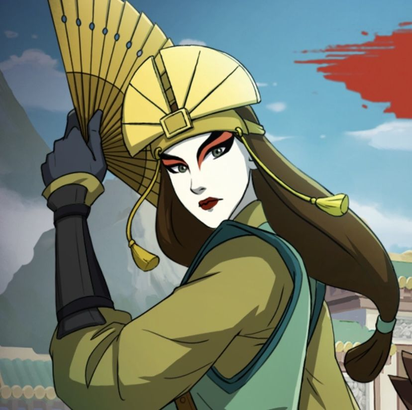

Terra
A terra é um dos quatro elementos do mundo Avatar. Seus dominadores utilizam força, equilíbrio e conexão com o solo para controlar e manipular a terra de diferentes maneiras.
Conheça a terra ↓
O poder da terra
A dominação de terra permite que seus usuários controlem rochas, pedras e o próprio solo ao seu redor. Seus movimentos costumam ser firmes, fortes e precisos.
Os dominadores de terra podem utilizar suas habilidades tanto para ataque quanto para defesa, criando barreiras, lançando rochas e modificando o terreno durante um combate.
A terra representa estabilidade e resistência. Por isso, seus dominadores precisam aprender a permanecer firmes diante dos desafios e confiar em sua força.


Toph Beifong
Toph Beifong é considerada uma das maiores dominadoras de terra de sua época. Apesar de ser cega, ela desenvolveu uma maneira única de perceber o mundo através das vibrações transmitidas pelo solo.
Dominação
Toph possui enorme habilidade para controlar e manipular a terra.
Metal
Toph descobriu uma forma de utilizar a dominação de terra para controlar metal.
Sentido Sísmico
Ela consegue perceber vibrações através do solo, identificando pessoas e movimentos ao seu redor.
Metal
Uma técnica avançada que permite controlar partes metálicas presentes no ambiente.
Lava
Uma técnica rara que permite transformar e controlar a terra em estado líquido.
Sentido Sísmico
Permite perceber vibrações através do solo, identificando pessoas e movimentos ao redor.
Cristal
Permite manipular formações de cristal e utilizá-las para criar estruturas e ataques.

A força da terra
A terra representa força, estabilidade e resistência. Seus dominadores aprendem a enfrentar os obstáculos permanecendo firmes diante das dificuldades.
Essa característica faz com que a dominação de terra seja extremamente eficiente para criar defesas e controlar o ambiente ao redor.
Assim como uma montanha permanece firme durante uma tempestade, seus dominadores precisam desenvolver confiança e determinação.
Força, resistência e estabilidade
A terra é muito mais do que apenas um elemento. Ela representa força, estabilidade, resistência e confiança para enfrentar qualquer desafio.
A história de personagens como Toph mostra como determinação, criatividade e treinamento podem transformar um dominador em alguém extremamente poderoso.
Permaneça firme como a terra.
VOLTAR AO INÍCIO →